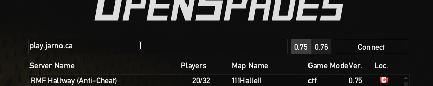

OpenSpades
Mix between a first person shooter and Minecraft. Build defence structures, dig many tunnels or go on the offensive.

Getting the game
Tips
- On joining, you will be asked to choose a team and a weapon. If you change your mind during play, press L to get back to that selection screen.
- Use the scroll wheel to cycle between your weapons, the shovel and the block. The shovel can destroy blocks, the block can build walls
- If you want to see a bigger map, press N. Press N again to make the map go away again.
Non-free assets
OpenSpades contains non-free assets that were copied from the original Ace of Spades games. The creators of OpenSpades were unabled to contact the authos, so these assets were never released under an open licence.
Fortunately, there is a drop-in replacement for these assets available. All models have been recreated under a CC0 licence and the sound effects have been replaced by mostly CC0 equivalents with a few exceptions that are CC-BY.
Installation
- Download the libre assets: pak001-Free.pak
- Find the location of pak000-Nonfree.pak for your OpenSpades installation. For example /usr/share/openspades/Resources/
- Copy the downloaded pak001-Free.pak to the same location.
- Optionally, delete pak000-Nonfree.pak. It it no longer needed because pak001-Free.pak will overrule all of the content in pak000-Nonfree.pak.
Connecting
When you start the game you will immediately enter the server browser. If you click on "Setup" at the bottom of the screen, you can set your in-game name. Click on "Back" to return to the server browser.
To connect to the server, type 192.168.122.44 in the input field at the top and click on the "Connect" button to the right.
